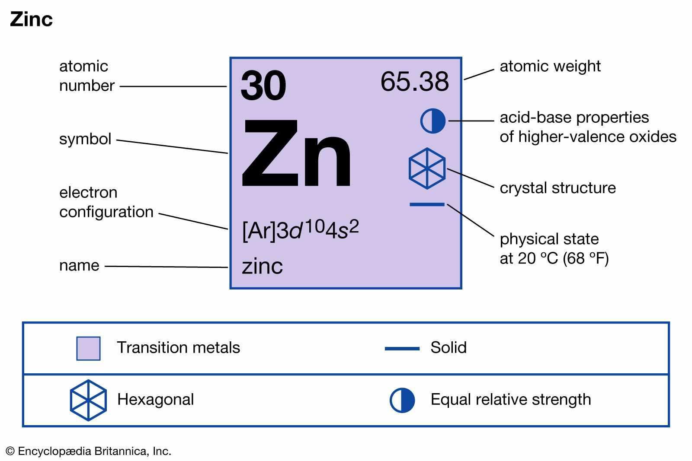

It is a chemical element and has an atomic number of 8 because it has eight protons in its nucleues.
Oxygen helps organisms grow, reproduce, and turn food into energy.
We humans, along with other creatures, need oxygen in the air inorder to breathe and stay alive.
Oxygen is generated during photosynthesis by plants and many types of microbes.
Oxygen is important because it plays a critical role in the respiratory system
Zinc
Zinc is a chemical element with an atomic number of 30. It is a mineral that is essential for many of the body's normal functions and systems, including: the immune system, wound healing,
it also supports our body's growth and development.
Zinc is an essential micronutrient for human metabolism.
Zinc may reduce the duration of cold symptoms, support blood sugar management,
improve severe and inflammatory acne, decrease heart disease risk, and slow the progression of macular degeneration.
Zinc supplements can be a safe and effective wayto increase your zinc intake and improve several aspects of your health.
However, there are also side effects to consider.

Sodium Chloride
Sodium cloride also known as salt, common salt, table salt, or halite, is an ionic compound with the chemical formula NaCl.
It is produced when the elemental sodium combines chemically with chlorine to generate an ionic compound.
Sodium chloride is commonly used foras an electrolyte replenisher to help prevent heat cramps caused by too much sweating.